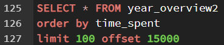

Using SQL we clean, organize, format, and analyze our data
Processes for PostgreSQL
In order to process the data using SQL we need to first create our table. We then repeat this process for each monthly data
We then import our data using the COPY function
We noticed that in our table, the datatype for started_at and ended_at, are in varchar thus not displaying the date and time correctly, so we will change the datatype of those two columns
Using SELECT * we see that some table has two extra columns that contain all NULLS values so we drop the columns in each of those table
Now we combine all tables into one and call it ‘year_overview’
6. We need a new aggregation in order to get a deeper insight into our data, so we find the time each rider spent after taking their bike by finding the differences between ‘started_at’ and ‘ended_at’, then we saves our output into a new table called ‘rider_time_spent’
7. We rename our column ‘ride_id’ into ‘rider_id’ so we can use the JOIN function properly later
8. We then combine our data tables together, using the JOIN function and also insert it into a new table so we can view all our data at once
9. We check our result 
10. We realized that there are many rider that has between negative to 20 seconds ride time, we check our results to see how many riders falls between these numbers
11. We will filter those out of our data base since anything less than 20 seconds can be consider outliers. But before we delete any data, to be safe, we will make a copy of our current table for safe keeping incase we make any mistake
12. Then we proceed to delete our data
13. Now that all of our data is clean and proper, we can do some calculation on them. We then go to find the distinct values, maximum, minimum, and means of our casual and member riders and also put the results into a new table.
14. After looking at out statistical summary we realized we need more ways to aggregate our data, so we find the days of the week that each rider used their bike.
15. We then put this results in a new table and label the table ‘day_ridden’ and the column ‘day_of_week’
16. As we made this into a new table we also need to rename the ‘ride_id’ to ‘rider_id’ so we can join our tables together. Otherwise if we have the same column name in two tables we won’t be able to join them together.
17. Then we join our ‘day_ridden’ table into our ‘year_overview2’ to understand when each of our users decide to use their bikes and label this ‘year_overview3’
18. After checking the results, we see that there are about 500,000 more rows than we anticipated, upon looking closer at the data we realized the JOIN query created duplicates in our table so we want to find the duplicates
19. Having found our duplicates we now remove them
20. Now we can find the most and least popular day people take their bikes out
21. Now we can compare it to our riders, with this function we can see what days are popular and least popular for our casual and member riders.
22. Lastly we calculate the average time spent on each day with our casual and member riders
23. Having finished our analysis of our riders, we now export our data tables and input it into a visualization software like Tableau for easy presentation.